## Project Summary (Fall 2021)
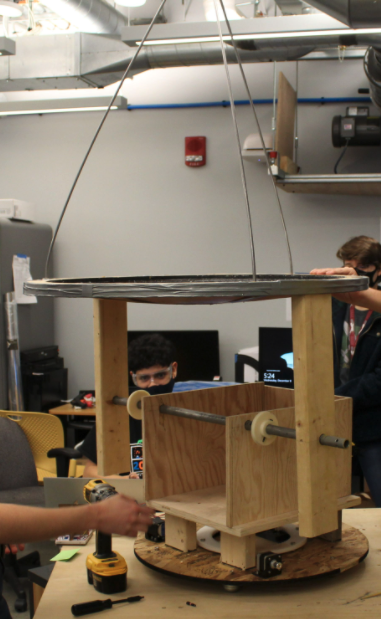
### Background
The students were given a prompt at the beginning of the semester to design an intervention that captures energy from the environment, and use it. Over a couple weeks of brainstorming, the students converged on the idea of building a solar cooker using a solar collection device as well as a thermal battery. This would enable solar collection during peak solar irradiance hours in the middle of the day, and storage until the heat is desired for cooking in the evening. The project is intended to be made of affordable materials so that it could be produced and used in developing regions of the world.
The approach was partially inspired by a [previous project by MIT Professor David Wilson](https://solarcooking.fandom.com/wiki/Wilson_Solar_Grill) (now retired) in 2012. The Wilson Cooker uses a lithium nitrate solar battery for latent-heat storage, and a large Fresnel lens for solar collection. However, the project never reached the point of a functional prototype (though some [performance tests](https://static.wikia.nocookie.net/solarcooking/images/6/6c/Wilson_Solar-cooker_paper_2013_09_16.pdf/revision/latest?cb=20160603213914) were done). The large Fresnel lenses that the design requires are prohibitively expensive, and the device has to be manually oriented to the sun.
A different salt mixture, a sodium/potassium nitrate (NaNO3/KNO3) eutectic mixture, was used by Professor Mike Short for a design class associated with the Ulaanbaatar project. It was decided to use these same blocks, so as to avoid duplicating effort. The blocks were fabricated from 1/4" stainless steel at the MIT Machine Shop. The salt mixture has a melting point of 120C and stays at around 300C for a while.
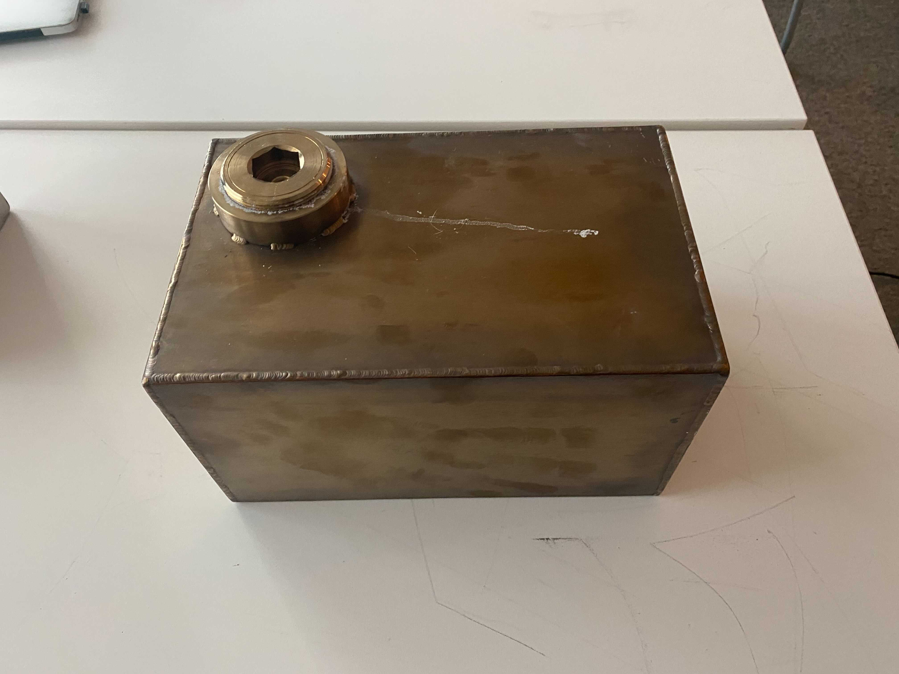
### Solar Collection
Two methods of solar collection were considered; a Fresnel mirror array (led by [Joseph](https://deionizedplasma.github.io/22.03/)) and a parabolic reflector (led by [Pablo](https://pabloarroyo2002.github.io/Rapid_Prototyping-_2203/)). [Jessica](https://wang-jessica.github.io/rapid-prototyping/index.html), [Jaron](https://jaronfcota.github.io/rapid-prototyping/), and [Lucas](https://lmarden.github.io/rapid-prototyping/) also contributed.
The Fresnel reflector array seemed to focus light fairly well, but the support structure was ultimately too flexible and the hot glue too weak a bond for this to be a usable prototype attached to the final assembly. To make the reflector less flexible and provide mounting points to the final assembly, Joseph attached wooden supports to the back of the plate.
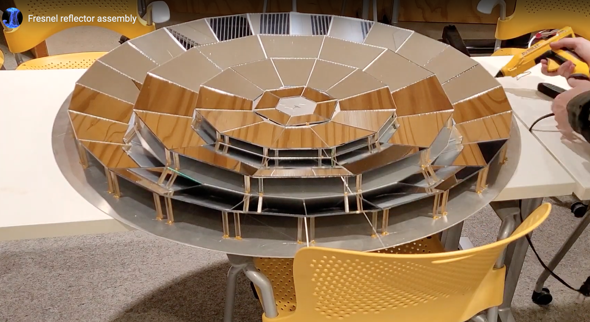
Joseph also designed a parabolic secondary reflector, composed of 12 identical 3D-printed wedges. Mylar film was laser cut and then glued to the wedges. While this provided a fine first approximation, there may be an opportunity to improve on this design. It would be preferable to have fewer seams and better surface continuity, and for it to be less laborious to fabricate.
<img src = "./img/secondary_reflector.jpg" alt = "secondary reflector" width = 600>
The secondary reflector was attached to the parabolic reflector, as the Fresnel assembly was not yet sturdy enough to use in the demo. It was attached using three rods with threaded ends, such that the position and orientation of the secondary reflector could be fine-tuned.
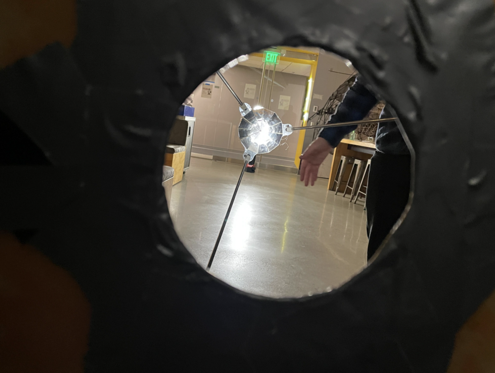
The parabolic reflector was created by sealing a layer of mylar film between a table and an MDF ring, inflating the cavity, and applying epoxy and fiberglass.
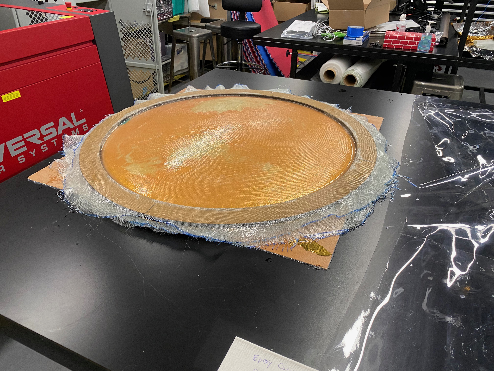
It was determined that the focal distance from the front of the reflector was 31 1/4", and the secondary reflector was mounted accordingly. A spotlight was using to verify the positioning of the secondary reflector, but this seemed to not provide a good approximation of sunlight.
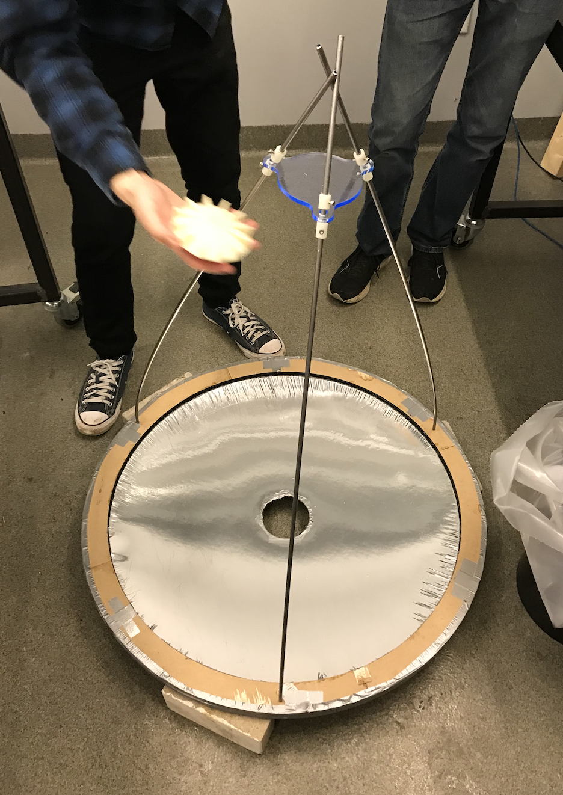
<!-- 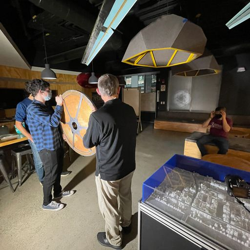-->
### Solar Tracking
Students [Lucy](http://snarcanine.github.io/22.03/index.html), [Calvin](https://calvinjc01.github.io/rapid-prototyping/), [Zangi](https://szangi.github.io/intro-to-design/), and [Gyalpo](https://gyalpodongo.github.io/Gyalpo-Portfolio/) contributed to the solar tracking implementation.
<!-- no tracking, vs electrical cost of tracking -->
Below are two approaches to "altazimuth" tracking, where one degree of freedom tracks the altitude angle while another tracks the azimuth. The alternative is equatorial tracking, where one degree of freedom is used to aim the device toward the equatorial path, and then only one degree of freedom is needed to move throughout the day. Equatorial tracking was also considered, but it was difficult to find an efficient way to direct the light to the salt battery as the device moves over the course of the day. In the preliminary altazimuthal schemes below, the version on the left shows a secondary reflector but does not show a means of directing light to the salt battery. The version on the right
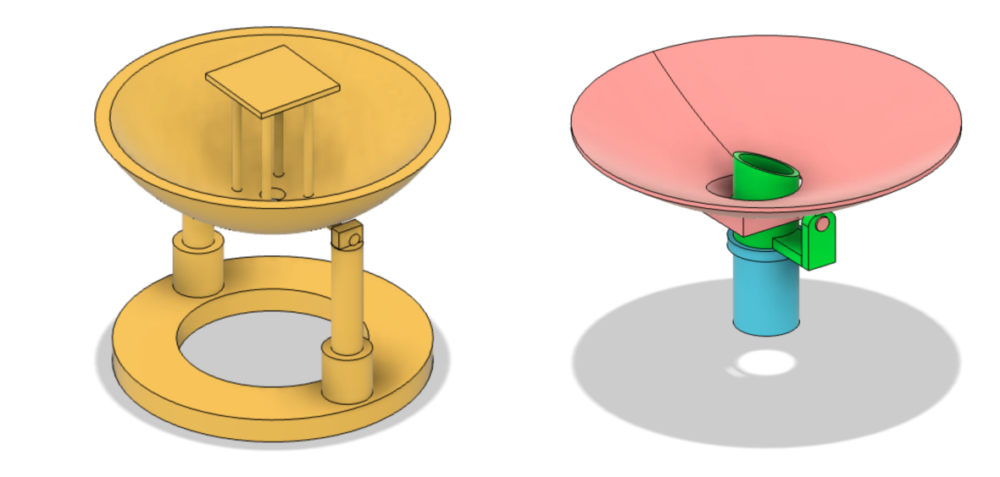
Up until the mid review, the cooker was conceived of as a device to be installed on MIT campus, to allow for solar cooking during warmer months while also serving as a didactic tool and conversation piece on renewable energy sources. That would involve elevating one of the devices from the previous image (or something like it) on top of a structure that also supported a cooking surface and housing for a salt battery. A further challenge was in conceiving methods to direct light to the salt battery despite changing angles, for example using
hollow mirrored tubes or other mirror configurations. By the mid review it became clear that this design direction required a bulky and cumbersome structure with many large and/or moving parts, where each joint may incur losses of heat/insolation. Instead, it was decided to set aside the cooking surface proceed with an altazimuthal scheme similar to that on the left, but heating a salt battery directly instead of needing to route the light through mirrors.
The solar tracking scheme involves an array of four photo sensors separated by a vertical partitions. Motors are commanded to rotate the assembly such that all four sensors register identical readings, thereby pointing the assembly in the direction of the sun.
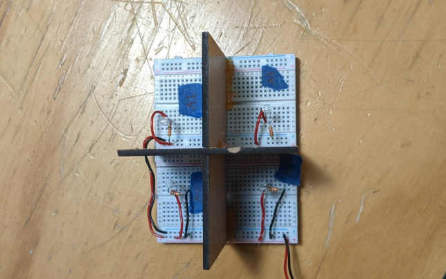
### Energy Storage
For this initial demonstration, energy will be stored in the salt battery described previously. However, cooking needs for a small family may require more energy storage than the current battery can provide (heat capacity: 1.53 J/(g*K)).
The energy storage team designed a heat transfer mechanism composed of two combs. One would be directly affixed to the salt battery, while another would be able to translate slightly atop the other, thereby regulating heat transfer as a function of overlap area.
[Lucas](https://lmarden.github.io/rapid-prototyping/) also designed a circular battery that could regulate heat transfer by raising and lowering. [Gyalpo](https://gyalpodongo.github.io/Gyalpo-Portfolio/), [Jaron](https://jaronfcota.github.io/rapid-prototyping/), and [Jessica](https://wang-jessica.github.io/rapid-prototyping/index.html) also contributed to energy storage and heat transfer devices.
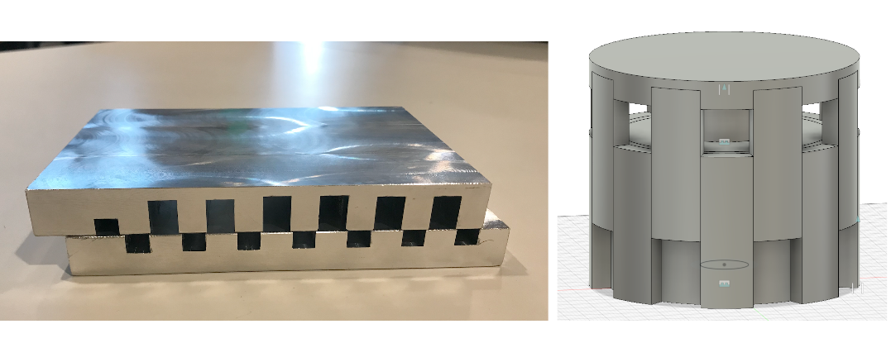
If the salt battery is heated to its capacity, one thought was that excess heat could be used to drive a Stirling generator. That could store electrical energy in a battery, which could be used to drive motors and power other electronics.
### Next Steps
There was insufficient time in the semester to do any performance testing on the completed assembly. A useful next step would be to take the prototype outside to see how hot we can get the salt brick (in January). There are certainly many aspects of this prototype that could be optimized, but first we should know if we're in the right ballpark, or orders of magnitude off from being able to cook a meal.
Taking the prototype outside and measuring it with a thermal camera would help to make a number of design decisions, even if the salt battery is still far too cold to cook on. For example, it would be useful to determine whether the Fresnel array or the parabolic reflector would be able to impart more heat to the salt battery. Even though neither device has optimal optics, preliminary results could help decide which direction to focus on for the next iteration. Other next steps include:
* Reconsider and decide on a use case for the solar cooker. Could it be useful for the developing world? Or is it better suited to a different target audience? Revisit the BOM cost.
* Is the mode of use acceptable? In the present iteration, the device tracks the sun and simply projects a concentrated beam onto the side of the salt battery. The wooden box would be filled with fire bricks, into which the salt battery is placed. During the day, bricks would be placed on the top of the battery for insulation, and removed from the side to allow the concentrated beam to heat the box. The side is covered when the battery is no longer being heated, and the top is uncovered in order to be used for cooking.
* It is likely that much heat will be lost because the concentrated beam will not strike the salt battery at a surface normal angle. Making a steel wedge to attach directly to the side of the salt battery might help considerably (although it will still not be perfect as the altitude changes throughout the day). Painting the wedge surface black would also help.
* The tracking system has not yet been fully implemented. The azimuthal degree of freedom (a circular rack and pinion) should work fine once the casters are placed on a smoother surface than the current plywood base (i.e., lasercut a 24" donut shape for the casters to roll on). The altitude degree of freedom needs timing belts installed and tightened. It will likely also require some kind of counterweight to minimize the torque required to raise/lower the dish.
* Design a more efficient secondary reflector, and reconsider how it is attached to the dish.
* Stabilize the Fresnel reflector, and compare its efficiency to the parabolic reflector.
* Reduce the slop in the altitude degree of freedom (make tighter connections to the rod).
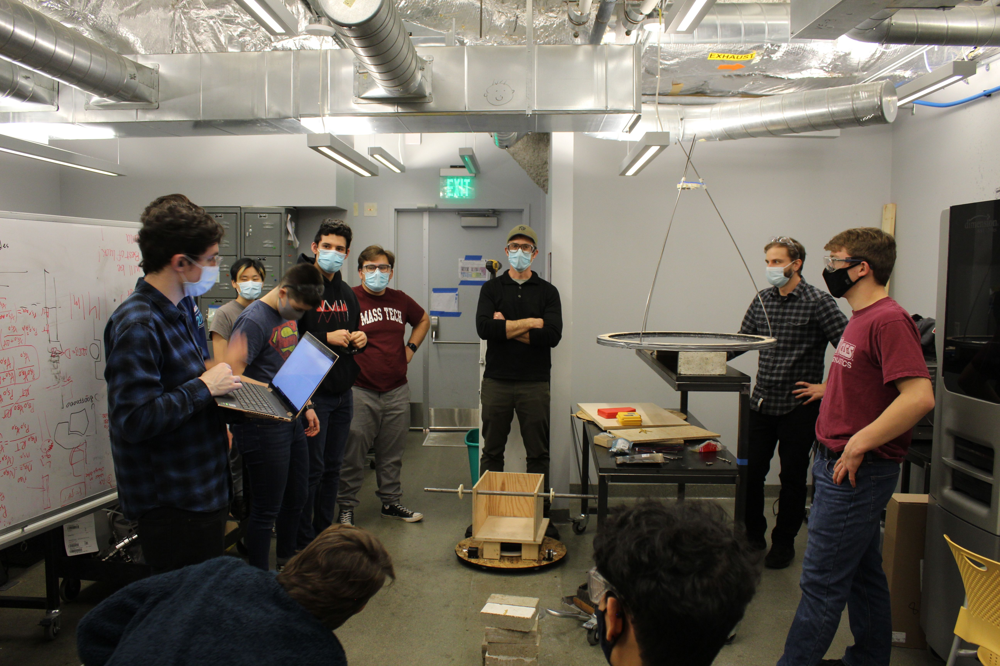
### Students
* [Calvin](https://calvinjc01.github.io/rapid-prototyping/)
* [Gyalpo](https://gyalpodongo.github.io/Gyalpo-Portfolio/)
* [Jaron](https://jaronfcota.github.io/rapid-prototyping/)
* [Jessica](https://wang-jessica.github.io/rapid-prototyping/index.html)
* [Joseph](https://deionizedplasma.github.io/22.03/)
* [Lucas](https://lmarden.github.io/rapid-prototyping/)
* [Lucy](http://snarcanine.github.io/22.03/index.html)
* [Pablo](https://pabloarroyo2002.github.io/Rapid_Prototyping-_2203/)
* [Zangi](https://szangi.github.io/intro-to-design/)